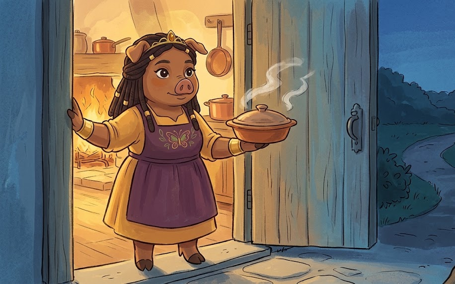
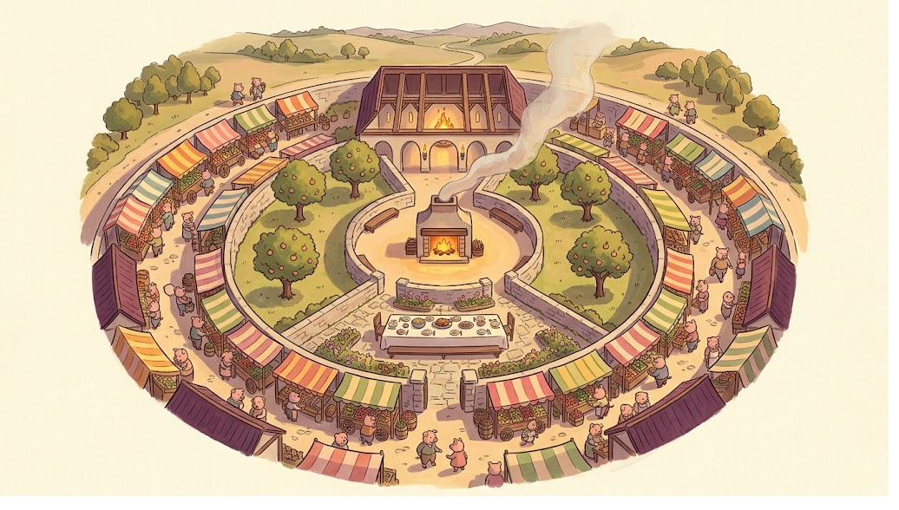

Who gets which key, and how anybody moves. Carolyn drew it on the back of a
bread list, the Friday after Fair Week.

She is glad to see them. She is not moving.
The Son of God had rings. He taught crowds of thousands and sent out seventy-two and travelled with
twelve and took three of them up the mountain, and there was one He called the disciple whom He loved.
Nobody has ever accused Him of being stingy with His heart.
So the thing most of us are quietly afraid of turns out not to be true. Letting some people closer
than others is not a failure of love. It is what love looks like once it has any shape at all. A house
with no walls inside it is not a generous house. It is a barn.
So here is a map of the Keep. Six rooms, working inward, and one mark that can be set anywhere.
The hatched band is the Watch. Notice that it is not a ring. It crosses all of them,
because the person who has hurt you is very often already standing near the middle.
The Hearth
One person, or very nearly. A husband or a wife. The one who has seen you unfinished
and did not go anywhere.
Keys grantedAll six, freely. Time without an appointment. The thoughts that aren't
done yet. A say that can actually change your mind. The door, the purse, and the longest patience you
have.
What you owe hereHonesty before it is tidy. Hard news first, not last. Your own
repair, fast, when you are the one who was wrong.
How someone arrivesYears, hard weather, and a promise made out loud. Never a
feeling on its own. A feeling is how you notice somebody. It is not how you move them in.
How someone leavesAlmost never over one failure. Over harm that goes on and on
and never gets put right — and even then with somebody sitting beside you, not alone at midnight.
A sentence for hereI want you to know this before anybody else
does.
If this room is empty right now, it is empty. That is a grief and it is not a verdict. An empty
Hearth is not the same as a failed one, and it is not filled by promoting somebody early.
The Long Table
Household and immediate family. Parents, siblings, children — and the two or three
friends who have functioned as family for years.
Keys grantedMost of your time. Most of what you know about yourself. A real say.
The door with a message first. Help that costs you something.
What you owe herePresence at the hard things. The truth about yourself within a
reasonable time — not immediately, but not never.
How someone arrivesBirth, marriage, or a decade of Tuesdays. But here is the part
people miss: blood gets you the seat, conduct keeps the keys. Being family is a seat nobody can take
from you. It is not a set of keys nobody can take from you.
How someone leavesUsually they don't. Usually the seat stays and specific keys
come back to you. That is the Watch, and it is the most useful thing on this page.
A sentence for hereCan I tell you something I haven't figured out
yet?
If the difference between forgiving
somebody and trusting them again is the part that will not come clear — and for most people it
is the whole difficulty — What Was Done To You, in
Keep Your Heart, is a chapter about exactly that. Forgiveness,
reconciliation and trust are three different things, and most of the damage comes from being handed
all three as one.
The Inner Court
Tested friends. Three to five, if you are doing well. Each of them has kept a hard
thing you told them, and told you a true thing you didn't want.
Keys grantedTime, generously, with some notice. Most of the inside story. Advice
you genuinely weigh. Your home by invitation. Help within reason.
What you owe hereFollow-through. Starting the conversation sometimes instead of
always being started. Saying the kind true thing when they need it and won't like it.
How someone arrivesTwo or three years, and one hard conversation that both of you
survived. The survived conversation matters more than the years.
How someone leavesA confidence broken. A long pattern of taking. They usually go
back out to the Great Hall — not off the map.
A sentence for hereI have room for that this week, but not on short
notice.
The Great Hall
Good company. Church, the team, the small group, the neighbours you actually like.
Twenty people, or fifty. You are glad to see all of them.
Keys grantedPlanned time. The public version of your life and a little more.
Opinions heard, not obeyed. Your home for gatherings. Help that costs you an afternoon.
What you owe hereWarmth. Doing the thing you said you would do. Not repeating what
you heard.
How someone arrivesRepeated pleasant contact and one kept promise. This ring is
easy to enter, which is the point of it.
How someone leavesMostly by drifting, and drifting is not a rupture. People move
away, change churches, get busy. Nobody has to be at fault.
A sentence for hereThat doesn't work for me, but I'd love to come to the
next one.
Marketrow
Acquaintances. Coworkers, the neighbour two doors down, the man at the fish counter who
always saves you the good one. Real, pleasant, and bounded.
Keys grantedTime inside its own setting — the shop, the office, the school run.
The public version. No say. No door. Small favours, cheerfully.
What you owe hereCourtesy, honesty, fair dealing, and a decent word about them
when they are not there. Nothing more. Nothing less, either.
How someone arrivesNothing is required. This is simply the default for people you
see regularly, and there is no shame in a great many people living here for thirty years.
How someone leavesThe same way they came. Quietly, and without an announcement
being owed to anyone.
A sentence for hereI keep my weekends for family — but I hope it's a
good one.
The Road
Strangers. The public. Comment sections. And — this is the one that costs people
dearly — anybody you have known for three delightful weeks.
Keys grantedThe public version and nothing else. No say, no door, no purse.
Kindness on demand. Trust on none.
What you owe hereDignity. Every one of them is made in the image of God, and
courtesy costs you nothing and is owed to all of them.
The trap that lives hereCharm is cheap and it comes early. That is the whole
trouble with it. Three weeks of delight tells you somebody is delightful. It tells you nothing about
what they do when keeping their word starts to cost them, and that is the only thing you actually
need to know.
A sentence for hereIt was so nice to meet you. And that is a
complete sentence. It does not need a phone number attached to it.
The Watch
Not a ring. A mark you set on one named person, at whatever ring they are already
standing in.
Who it is forAnyone who has done real harm and has not repaired it. Your uncle.
Your closest friend. Someone at the Long Table, most likely, because the people who can hurt you are
the people who were let close enough to.
What it doesThey keep their standing. A brother is still a brother. Specific keys
come back to you — the door, the purse, the unfinished thoughts, the benefit of the doubt — and stay
with you until behaviour has changed, over time, where you can see it.
The three jobs it keeps apartForgiving is something you do on your own, tonight:
I am letting go of what you owe me. Making peace takes two of you, and it needs them to be sorry.
Handing back a key takes time and proof, and it is the slowest of the three. Three different jobs —
and most of the trouble people get into comes from trying to do all three with one hand.
The hardest and most useful sentence on this pageI've forgiven you. I'm
not ready to give you access yet. Both of those are true, and neither one is a punishment.
What you are actually handing out
People talk about closeness as though it were one dial. It isn't. It is six keys, and they are handed
over one at a time — which is a mercy, because it means you can give somebody a great deal of warmth
without giving them the house.
Time.From in its own setting at Marketrow, to scheduled and generous in
the Court, to unannounced at the Hearth.
Knowing.From the public version, to the honest version, to the unfinished version.
The unfinished version is the valuable one. Spend it slowly.
Say.From heard, to weighed, to able to change your mind. Most
people should be heard. Very few should be able to change your mind.
The door.From never, to by invitation, to with a message first, to freely. Being let
into your house is its own key. None of the others come with it.
Purse and hands.From nothing, to a small favour, to an afternoon, to something that
really costs you. Vouching for somebody belongs on this key too, and it costs more than money.
The benefit of the doubt.This is the one that costs people everything, so read it
twice. Nobody gets the good knife on their first day in the kitchen — not because you think badly of
them, but because you have not watched them use one yet. This key does not go up with how fond you are
of somebody. It goes up with how much you have actually seen. Handing it over early is not generosity.
It is a guess, and you are the one who pays if the guess is wrong.
And notice what that last key is not. It is not forgiveness. Forgiving is never rationed and
never earned, and you will be asked for it seventy times seven. The benefit of the doubt is a different
thing altogether — your best guess about what somebody will do next. A guess is supposed to change when
you learn something new. That is what a guess is for.
Saying it before it goes wrong
Most of the hurt in a friendship does not come from a broken agreement. It comes from a hope that
was never said out loud, and then held against somebody afterwards as though it had been.
Four different things get called an expectation. They behave completely differently:
A hope. It stays in your head. They cannot break it, because nobody ever told them it was
there. This is a letter you never sent, and then got angry about the reply. Almost all the quiet
resentment in the world starts here.
A request. Said out loud — and a real one is a request they are allowed to turn down. If
they aren't allowed to turn it down, it was never a request, and you should use the truer word.
An agreement. Both of you said yes. Now it can genuinely be broken, and now you have
something fair to raise.
A boundary. Not about them at all. It is what you will do. It requires nobody's
permission, and it does not need them to agree with it.
An expectation is a sentence about them. A boundary is a sentence about you.
So “you need to stop calling so late” is a request, and they can say no. “After nine I put
my phone in the kitchen” is a boundary, and they can't. Notice which one you actually have the power
to keep.
Pitch it at the right ring
The same words go wrong at the wrong depth. You do not get the big pot out for one egg, and you do
not try to feed nine people from a teacup. Sit a market acquaintance down for a serious talk about a
small thing and you will frighten her. Handle a Long Table matter with a light remark in passing and it
does not get handled at all.
Road and Marketrow. One light sentence, in the moment, no reason attached. “I don't do
weekends.” A reason invites negotiation, and there is nothing here worth negotiating.
Great Hall. One sentence and one warm alternative. “I can't host, but I'll bring the
pernil.”
Inner Court and Long Table. Ask for the conversation before you have it, say the specific
thing, and say what you want to be different. “Do you have ten minutes this week? There's something
small I want to say before it turns into something large.”
Hearth. The same, only sooner, and with your own part named first.

Pigglyvale, late afternoon. Not the chart — the place the chart is about.
Moving inward
A ring is earned, and there are only four things worth counting.
Time under weather. Not how long you have known them. How long you have known them through
something inconvenient.
Small things, repeatedly. Being on time. Remembering. Doing the dull thing they said they
would do when nobody would have noticed if they hadn't.
How they take a no. This is the single most useful test there is, and it is nearly free. Give
a small, early, unimportant no and watch what happens. Somebody who sulks over a Tuesday will not be
safe with a Hearth. You want to find this out over a Tuesday. That is precisely why the early no is not
unkind. It is the cheapest way there is to learn something you would otherwise learn at a much worse
price.
What repair looks like when they fail. Everyone fails. What you are watching for is whether
the apology has its three parts — what I did, no excuse attached, what I will do differently — and
whether the behaviour actually moves afterward. A person who repairs well can be trusted further than a
person who rarely fails.
And one rule of movement: one ring at a time. Nobody goes from the Road to the Long Table,
however well it is going. That is not a rule against them. It is a rule about how knowing anybody
works.
Moving outward
There are five rungs here. Almost all the damage in the world is done by people who used none of them
and then used the last one.
Notice it. One sentence to yourself, facts only, no story attached. “That's the third
time she has cancelled the same week she asked.” Not “she doesn't respect me.” You don't
know that yet, and the story is what makes the next four rungs feel impossible.
Name it, small and early. Lightly, in the moment, without a speech. “Hey — third time.
What's going on?” This rung is the whole page. Everything below it exists because this one gets
skipped.
Adjust one key. Quietly. Stop offering the unfinished version. Stop being available on
short notice. You do not owe anyone an announcement that you have stopped volunteering something.
Step them out one ring — and say so. Out loud, kindly, without a case being prosecuted.
“I care about you and I'm pulling back on how much I'm sharing for a while. It isn't a punishment.
It's me being honest about where I am.”
Set the Watch. Access closed. Love intact. The door is shut and it is not welded, because
nothing here is final and you may be wrong.
Cutting someone off is not a boundary. It is what is left when there weren't
any.
And it is worth being plain about why that last rung feels like the only one when it comes. It isn't
cruelty and it isn't weakness. It is what happens when you put somebody in the closest room on three
weeks of knowing them. After that, every ordinary letdown lands in the closest room, where things
bruise. Twenty of them pile up with nowhere to go, because the second rung never got used, and by now
saying anything would look mad — all this, over a missed Tuesday? So you say nothing. And you say
nothing. And the pot sits on the heat with the lid clamped down, and there is only one way a pot like
that ever comes off the stove.
Not because you are harsh. Because the small tools were never picked up, and what was owed got very
big in the dark.
The early no is the kind one. It is what lets you keep people.
A Note from the Storykeeper
Thomas, Drake of Snouton, Master of Lessons, and a duck who has done every
single thing on this page wrong at least twice
I should confess before I teach. My own failure is not caution — it is that I decide within about
four minutes that someone is my person, and then I hand over the whole ring of keys at once, and
then I am injured by a stranger and cannot understand how it happened. I have called this warmth.
Sometimes it was. Often it was impatience wearing warmth's apron.
The passage I keep returning to
In John's second chapter a great crowd in Jerusalem sees the signs and believes in His name — and
then comes one of the strangest verses in the Gospels. “But Jesus on his part did
not entrust himself to them, because he knew all people.”
Stay with that a moment, because everything hangs on it. This is the same Man who tells us to love
our enemies. The same Man who washed the feet of the one already arranging to sell Him. And here He is
holding Himself back from a crowd that had done nothing wrong at all — a crowd that had just believed in
Him. So loving somebody and handing yourself over to them cannot be the same act. If they
were the same, this verse would put Christ at odds with His own command, and He is not.
Which gives us this. Love is owed to everybody. Trust is worked out from what you have seen. Holding
back the second is not a shortage of the first — it is knowing people, which is exactly what the verse
says He was doing.
And it reaches all the way into a kitchen in Pigglyvale. It is why you can hand somebody a plate of
arroz con gandules and a warm afternoon and mean every bit of it, and still not hand them the thoughts
you haven't finished having. Both at once. Nothing in that is at odds with itself.
Joseph does the same thing in Genesis and nobody calls him cold for it. He weeps — he has plainly
forgiven them already — and he still puts his brothers through three chapters of testing before he tells
them who he is. He needed to know whether these were the same men who sold him. They weren't, and there
was no way to find that out except slowly. The forgiving happened in a moment. Getting back to each
other took the long way round.
Try it this week
One small, early, unimportant no. Just one, to somebody who is presently between
rings. Say: “That doesn't work for me this week.” No reason after it — the reason is what turns a
boundary into a negotiation. Then watch what they do with it, and write down what you saw.
You will have learned something on a Tuesday that most people pay for on a much worse day.
After the Washing-Up
Carolyn and Thomas, the Kitchen Royal, the Friday after Fair Week
CAROLYN.(pushing a sheet of paper across the table)
Don't laugh at it.
THOMAS.(reading for a long time) This is a bread
list.
CAROLYN. It's the back of a bread list.
THOMAS. You have drawn a map of yourself on the back of a bread
list.
CAROLYN. I drew the kitchen door and kept going outwards. It
turned into that on its own.
THOMAS. Why tonight?
CAROLYN. Thursday. I was sharp with Pim, and Pim had not done
one single thing. I have been saying yes since the Monday before last and not one bit of it landed on
the people I said yes to. All of it landed on a mouse.
THOMAS.(his wing tip splayed into its rough point)
Then let me ask you something. What would have happened if you had told Yolanda no, on the Monday?
CAROLYN.(at once) She'd have been put out with me for
an afternoon.
THOMAS. And then?
CAROLYN. …And then she'd have got over it, because she
always does. And I'd have had my Tuesday. And with the Tuesday I'd have got the bread order in on time,
so I wouldn't have needed Pim on the Thursday, so I wouldn't have — (she stops)
THOMAS. Go on.
CAROLYN. That is four things.
THOMAS. It is four things.
CAROLYN. I can do four things with a pot. I do it every day of
my life with a pot. Garlic goes in last or it scorches, and I have never once had to stand there and
work that out.
THOMAS.(the feathers on the back of his head settling
flat; quietly, quietly pleased) No. You haven't.
CAROLYN. So why can't I do it with a person?
THOMAS. Because when it is a pot, nobody is disappointed in you
at the moment you decide.
CAROLYN.(a long pause. She turns the bread list round and
looks at it the other way up.) Where does God go on it?
THOMAS. Nowhere. He isn't a ring.
CAROLYN. That sounds like you dodging.
THOMAS. It does sound like it. It isn't. Every ring on that
paper is a room in a house. Put Him in one of them and you have made Him a lodger in a house that can
burn down. He is not in the house. He is what the house is standing on.
CAROLYN. The floor.
THOMAS. The floor. Which is why the rule at the Long Table is
the rule it is. Nobody here loses a seat. We did not invent that, you know. We copied it.
CAROLYN. Some people were taught the other way.
THOMAS.(his spectacles slid down his bill and stayed
there) Yes.
CAROLYN. That the seat is the thing that gets taken.
THOMAS. …Then they were never taught how it works. They
were shown what it looks like when it breaks. Those are not the same lesson, though I grant you they are
very hard to tell apart from underneath.
CAROLYN. You should write that one down.
THOMAS. I have been writing it down for an hour.
CAROLYN.(after a moment) Have some bread.
Talk It Over
Name one person who currently has a key they haven't earned. Not to take it back today — only to
say which key it is, and out loud.
What is the difference between guarding your heart and hardening it? Where is that line for you,
and how would you know if you had crossed it?
Is there someone you have genuinely forgiven and are still not ready to trust — and have you been
carrying that as though it were a failure? (I have no clean answer for this one. I am not certain
there is one.)